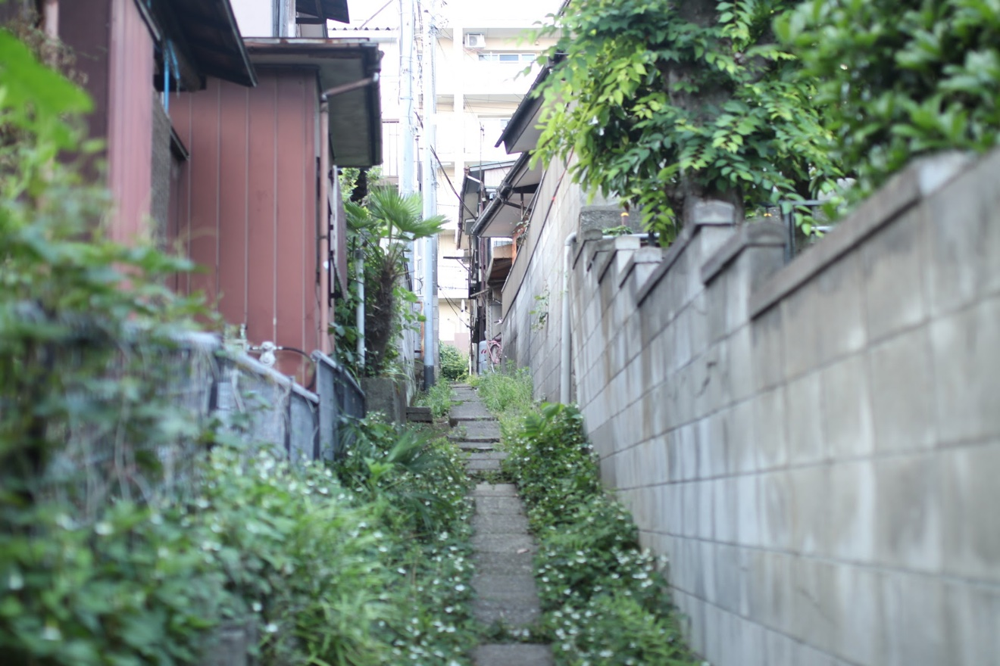

4,109人
SNS（Instagram、YouTube、Threads、X）延べフォロワー数
約82万回
Instagramの再生回数
（過去30日）
（過去30日）
96.3％
リールの視聴のうちフォロワー以外
（過去30日）
（過去30日）
2,404件
Instagramの投稿
数字は2026年11月9日時点
01
プロフィール
About街歩き川口の魅力を発信する、街の住人
暮らす街・川口市を歩いて回り、Instagram（@freddiefujiwara）で地元のお店を紹介するリールを投稿しています。 飲食店を中心に、理容店やリラクゼーションまで、実際に足を運んだお店だけを紹介するのがこだわりです。
紹介したお店はGoogleマイマップ「川口を歩くQAエンジニアマップ」にまとめ、誰でも巡れるように公開しています。 また楽天ROOMでは、実際に買ってよかったもの・使ってよかったものを置いています。
仕事QAエンジニアとして働いています
平日は、ソフトウェアの品質保証（QA）に携わるエンジニアとして働いています。 職歴・資格などの詳しいプロフィールは LinkedIn にまとめています。

- 名前
- 藤原史和（ふじわら ふみかず）
- 拠点
- 埼玉県川口市
- 出身
- 山口県
- 関心
- サイクリング／街歩き／グルメ／音楽／中国語学習
02
活動・発信
Activitiesこのサイトを起点に、発信している場所をまとめました。SNSや地図、楽天ROOMまで、それぞれ短いURLでつながります。
freddiefujiwara.com
川口を歩くQAエンジニア
- /instagram 川口市のお店をめぐる街歩きリールが中心。自然体で、実際に訪れたお店の空気感をそのまま届けます。
- /x ブログの更新お知らせなど、短い投稿が中心です。
- /youtube 川口の景色にSunoのオリジナル曲を合わせた、リリックVlogのShortsを公開しています。
- /blog 川口歩きの記録に、AIや自動化で暮らしを軽くする工夫、中国語学習のメモなどを書いています。
- /music 川口の歌、全7曲。そのまま聴けます
- /threads 川口の暮らしのことを、気軽に書いています。
- /chinese 中国語のレッスンや学習の記録を、ブログのタグでまとめました。
- /room 楽天市場で購入したものを中心に、実際に買ってよかったもの、使ってよかったものだけを置いています。
- /list-of-stuff ミニマリストの持ち物リストです。
- /map リールで紹介した川口のお店を、ブログ記事に地図つきでまとめました。
03
よく読まれている記事
Popular Articles川口市の情報交換
川口のお店の方や、川口に暮らす方と情報交換したいです。 「こんなお店ができたよ」「この通りならここがおすすめ」といった川口の情報がありましたら、 InstagramのDMからお気軽にご連絡ください。街歩きの仲間も歓迎です。
InstagramのDMで連絡する